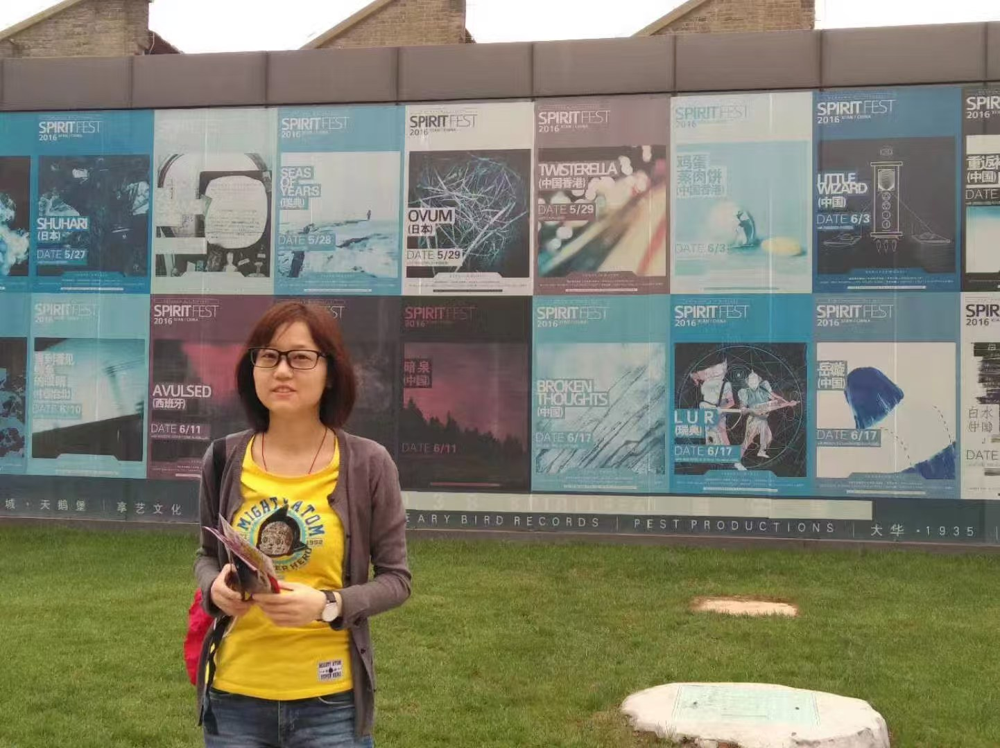

FIELD AA↗
AI 研究
从模型能力到真实问题，关注可解释、可复现、能落地的智能系统。
- 01
自进化因子挖掘智能体
因子生成 · 自动评估 · 迭代进化
- 02
LNPAgent: LNP发现智能体
智能体 · LNP 发现 · 研究自动化
RESEARCHER · BUILDER · OBSERVER
这是一个研究和个人生活的展板，用来呈现 AI 研究、量化思考，以及那些无法被模型解释的生动日常。
02
我观察模型怎样学会判断，市场怎样消化信息，也在不断加速的世界里，寻找并守住自己的节奏。
从模型能力到真实问题，关注可解释、可复现、能落地的智能系统。
因子生成 · 自动评估 · 迭代进化
智能体 · LNP 发现 · 研究自动化
寻找可验证的市场规律，同时认真对待交易成本、失效风险和不确定性。
趋势跟踪 · 策略学习 · 风险管理
ONGOING NOTES
UPDATED IRREGULARLY
吉他、打球、旅行，还有偶尔什么都不做。这里记录效率之外的时间，也记录结论之外的感受。

05 / LET'S CONNECT